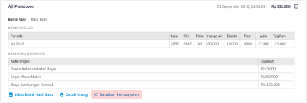

- Masuk ke menu "Tagihan" lalu pilih "Tagihan SR" di sidebar menu kiri.
- Masukkan nomor sambungan pelanggan pada form berikut ini:

- Tekan tombol "Lihat Tagihan" untuk proses selanjutnya.
- Pilih menu "Riwayat" di bagian kiri atas.
- Pilih pembayaran yang akan dibatalkan, kemudian klik "Batalkan Pembayaran"

- Masukkan alasan pembatalan di form yang telah disediakan, serta masukkan password pengguna yang akan melakukan pembatalan.
- Lakukan konfirmasi "Batalkan Pembayaran" jika Anda akan memproses pembatalan tersebut.